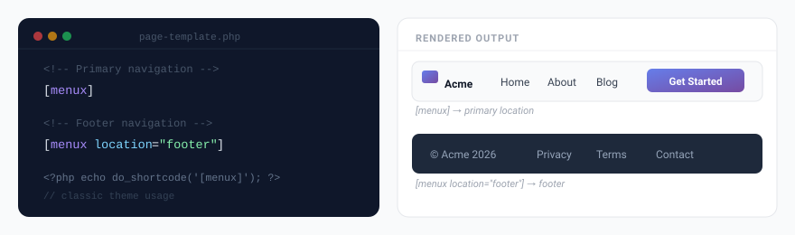

Shortcode [menux]
The [menux] shortcode lets you place a fully styled navigation menu anywhere that accepts shortcodes: pages, posts, text widgets, classic theme templates, and more.

Basic usage
The simplest form of the shortcode requires no attributes. It renders the primary menu location:
[menux]All menu items, themes, mobile settings, and features are configured globally in Menu Builder — the shortcode simply outputs the result wherever you place it.
The plugin manages its own menu items in Menu Builder → Menu Structure. These are independent of WordPress’s native Appearance → Menus.
Attributes
| Attribute | Type | Default | Description |
|---|---|---|---|
location |
string | primary |
Which menu location to display. Each item is assigned a location in Menu Builder → Menu Structure. Available locations are primary, footer, sidebar, and mobile. |
Examples
Render the primary menu (default)
[menux]Render a specific location
[menux location="footer"]Two menus on one page (e.g. header and footer)
[menux location="primary"]
[menux location="footer"]Using in PHP templates
In classic theme templates (e.g. header.php) you can render the shortcode with:
<?php echo do_shortcode('[menux]'); ?>If you use a block-based (FSE) theme, use the Gutenberg block instead. It integrates directly with the Site Editor and uses the same global settings.